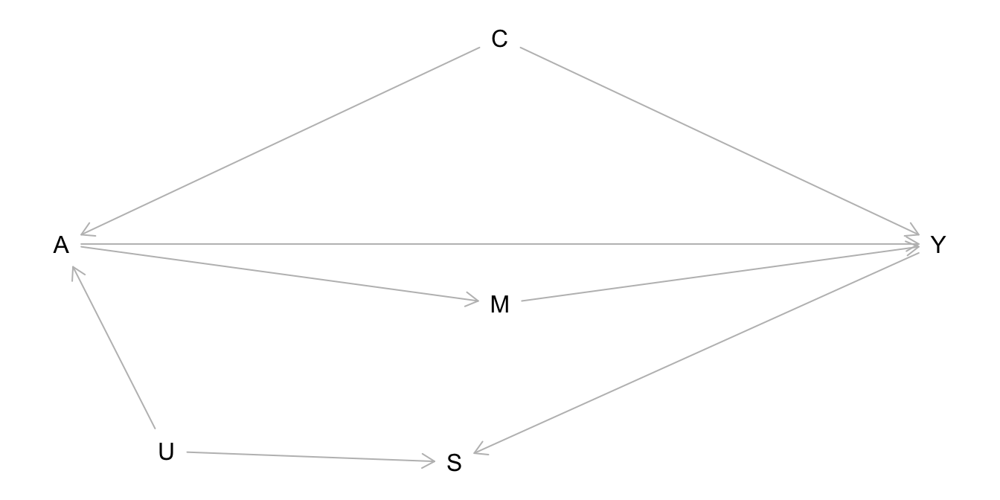
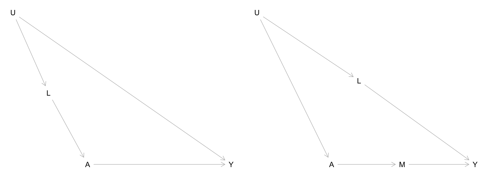
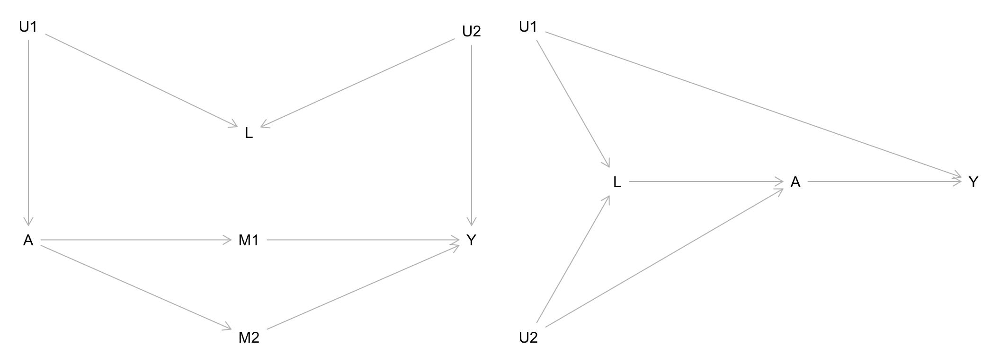
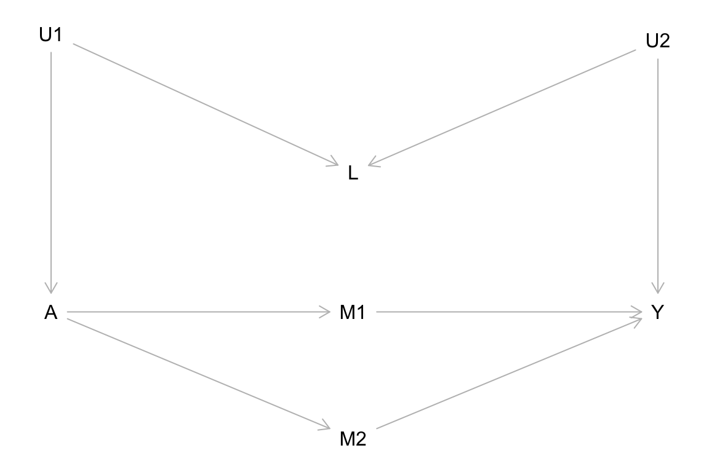

Topic 6 Graphical Structure of Confounding
Pre-class work
Videos/slides
Checkpoint questions: Link to Moodle checkpoint
What is the relationship between d-separation and conditional exchangeability? Explain in a few sentences.
Consider the causal graph below with treatment A, outcome Y, and other variables. Which of the following are causal paths?
- A <– C –> Y
- A –> Y
- A –> M –> Y
- A <– U –> S <– Y

- Which of the following are noncausal paths?
- A <– C –> Y
- A –> Y
- A –> M –> Y
- A <– U –> S <– Y
- Which of the following conditioning sets Z would work to leave causal paths open and block the noncausal paths?
- \(Z = \{C, M, U, S\}\)
- \(Z = \{\}\) (the empty set (no variables))
- \(Z = \{C\}\)
- \(Z = \{C, M, U\}\)
- \(Z = \{C, U\}\)
- \(Z = \{C, S\}\)
Learning Goals
- CNCP1: Explain how causal and noncausal paths relate to exchangeability and causal effects.
- DSEP1: Apply d-separation to block noncausal paths in causal DAGs with and without unobserved variables.
- DSEP2: Apply strategies to deal with exchangeability problems caused by unobserved variables.
- DSEP3: Simulate data from a causal DAG under linear and logistic regression SEMs to check d-separation properties through regression modeling and visualization.
- DSEP4: Explain how d-separation relates to conditional exchangeability.
Exercises
Exercise 1
Let’s draw connections between the graph ideas that we have built up and the core assumption of causal inference: (conditional) exchangeability.
Write a few sentences describing the relationship between the following ideas:
- Causal Markov Assumption/product decomposition
- Graph building block structures: forks, chains, colliders
- Causal and noncausal paths
- (Conditional) exchangeability
Exercise 2
For each of the causal graphs below, identify the set of variables needed to achieve conditional exchangeability of the treatment groups \(A\) for outcome \(Y\) (if possible). Any \(U\) variables displayed in the graphs are unobserved/unmeasured. Show your work.

Exercise 3
Unmeasured variables are important to think about when constructing causal graphs from expert knowledge. Often times, things like personality traits and social factors (e.g., living situations, communities interacted with).
Suppose that in the graphs below, the \(U\) variables represents social factors, \(A\) represents use of a social service, and \(Y\) represents some measure of financial independence.
In this context, describe what \(L\) might be in each graph and what these graphs illustrate about a general strategy for dealing with exchangeability problems caused by unmeasured variables.
Exercise 4
Another way to deal with unmeasured variables is by trying to obtain measurable proxies for them. (Sometimes proxies are also called surrogates.) Broadly speaking, a proxy/surrogate is a variable that is a good indicator for another.
The simulation below investigates the use of proxies for achieving conditional exchangeability. Summarize the main findings from these results.
library(dplyr)
set.seed(451)
n <- 10000
C <- rnorm(n, mean = 10, sd = 2)
A <- rnorm(n, mean = C, sd = 2)
Y <- rnorm(n, mean = C+A, sd = 2)
# Proxies (two of them: P1 and P2)
P1 <- rnorm(n, mean = C, sd = 1)
P2 <- rnorm(n, mean = C, sd = 0.1)
sim_data <- data.frame(C, A, Y, P1, P2)
lm(Y ~ A+C, data = sim_data) %>% summary()##
## Call:
## lm(formula = Y ~ A + C, data = sim_data)
##
## Residuals:
## Min 1Q Median 3Q Max
## -7.6410 -1.3500 0.0133 1.3511 7.6709
##
## Coefficients:
## Estimate Std. Error t value Pr(>|t|)
## (Intercept) 0.05079 0.10278 0.494 0.621
## A 1.00020 0.01004 99.643 <2e-16 ***
## C 0.99951 0.01422 70.269 <2e-16 ***
## ---
## Signif. codes: 0 '***' 0.001 '**' 0.01 '*' 0.05 '.' 0.1 ' ' 1
##
## Residual standard error: 2.006 on 9997 degrees of freedom
## Multiple R-squared: 0.8325, Adjusted R-squared: 0.8324
## F-statistic: 2.484e+04 on 2 and 9997 DF, p-value: < 2.2e-16lm(Y ~ A+P1, data = sim_data) %>% summary()##
## Call:
## lm(formula = Y ~ A + P1, data = sim_data)
##
## Residuals:
## Min 1Q Median 3Q Max
## -7.8180 -1.4517 0.0363 1.4611 9.0563
##
## Coefficients:
## Estimate Std. Error t value Pr(>|t|)
## (Intercept) 1.732811 0.101292 17.11 <2e-16 ***
## A 1.164455 0.009892 117.71 <2e-16 ***
## P1 0.668516 0.012527 53.37 <2e-16 ***
## ---
## Signif. codes: 0 '***' 0.001 '**' 0.01 '*' 0.05 '.' 0.1 ' ' 1
##
## Residual standard error: 2.163 on 9997 degrees of freedom
## Multiple R-squared: 0.8052, Adjusted R-squared: 0.8052
## F-statistic: 2.066e+04 on 2 and 9997 DF, p-value: < 2.2e-16lm(Y ~ A+P2, data = sim_data) %>% summary()##
## Call:
## lm(formula = Y ~ A + P2, data = sim_data)
##
## Residuals:
## Min 1Q Median 3Q Max
## -7.4902 -1.3604 0.0146 1.3524 7.5656
##
## Coefficients:
## Estimate Std. Error t value Pr(>|t|)
## (Intercept) 0.06553 0.10271 0.638 0.523
## A 1.00173 0.01003 99.873 <2e-16 ***
## P2 0.99653 0.01420 70.189 <2e-16 ***
## ---
## Signif. codes: 0 '***' 0.001 '**' 0.01 '*' 0.05 '.' 0.1 ' ' 1
##
## Residual standard error: 2.006 on 9997 degrees of freedom
## Multiple R-squared: 0.8323, Adjusted R-squared: 0.8323
## F-statistic: 2.481e+04 on 2 and 9997 DF, p-value: < 2.2e-16Exercise 5
Historically, people have tried to create definitions for confounders by listing criteria that purely rely on associations. For example:
A confounder must:
1. Be associated with treatment and outcome
2. Not be caused by treatment
Using the causal graph below, explain why this is not a good definition for a confounder.
